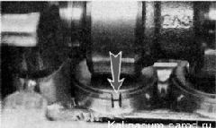
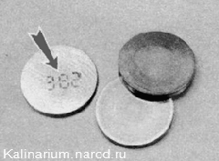
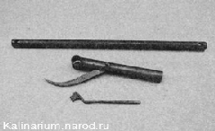
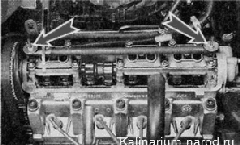
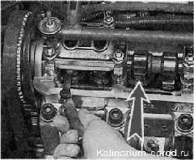
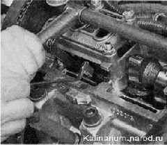
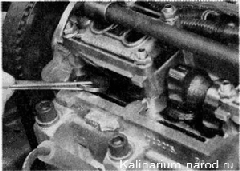
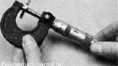

Регулировка зазоров в приводе клапанов грм двигателя 1,6 лДля компенсации теплового расширения стержня клапана между кулачком распределительного вала и толкателем клапана необходим зазор. Для впускных клапанов зазор должен составлять 0,15—0,25 мм, а для выпускных клапанов - 0,30-0,40 мм. Зазор задается подбором толщины регулировочных шайб. Шайбы устанавливаются в нишу, расположенную на толкателях сверху. Чтобы удобнее было извлекать шайбы, на верхних кромках толкателей сделаны пазы.  Размер шайбы нанесен на ее нерабочей поверхности. 
Совет Работу удобнее разделить на два этапа. Сначала измерить зазоры и рассчитать толщину новых шайб, а уже затем приобрести и установить новые шайбы. Для выполнения работы потребуются: — набор плоских щупов; — пинцет; — микрометр (с пределом измерения 0—25 мм); — приспособление для регулировки зазоров. Проверку и регулировку зазоров выполняют только на холодном двигателе (при температуре около +20 -С). Последовательность выполнения 1. Подготавливаем автомобиль к выполнению работы. 2. Снимаем крышку головки блока цилиндров. 3. Снимаем переднюю крышку ремня привода ГРМ. 4. Медицинским шприцем или резиновой грушей удаляем остатки масла вокруг толкателей клапанов. 5. Устанавливаем приспособление для регулировки клапанов на шпильки головки блока цилиндров и закрепляем его гайками, которые крепили крышку головки блока цилиндров. Рекомендация Существует несколько способов регулировки зазоров. Они отличаются порядком измерения зазоров у клапанов. В любом случае зазоры проверяются только при закрытых клапанах (их толкатели не поджаты кулачками распределительного вала). Если определить положение клапанов затруднительно, следует придерживаться приведенного ниже способа. 6. Вращая коленчатый вал по часовой стрелке, выставляем поршень первого цилиндра в положение БМТ такта сжатия. Коленчатый вал можно вращать накидным ключом на 17 мм за болт крепления его шкива или большой шлицевой отверткой за зубья маховика. Для этого следует снять нижнюю крышку картера сцепления (см. «Коробка передач - снятие и установка»). 7. Повернув вал из положения БМТ на угол 40—50° (на 3 зуба шкива распределительного вала), щупами соответствующих толщин определяем зазоры в приводе 1 и 3 клапанов (при счете по порядку от шкива распределительного вала). 
Щуп номинальной толщины должен слегка защемляться в зазоре между кулачком распределительного вала и регулировочной шайбой толкателя. 8. Если зазор не соответствует норме, поворачиваем толкатель пазом к себе. Приспособлением утапливаем клапан, удерживая толкатель от вращения отверткой вставленной в паз. Фиксатором приспособления стопорим толкатель в нижнем положении.  9. Пинцетом извлекаем регулировочную шайбу.
 10. По маркировке на шайбе определяем ее толщину. Если надпись стерлась, микрометром измеряем толщину шайбы..  11. Рассчитываем зазор новой регулировочной шайбы по формуле: а) для впускных клапанов Z - Y + X - 0,2 мм; б) для выпускных клапанов Z - Y + X - 0,3 мм; где Z — расчетная толщина новой регулировочной шайбы, Y — толщина снятой шайбы; X — зазор, определенный по щупу. 12. Подбираем новую шайбу, у которой толщина близка к расчетной {+ 0,05 мм). 13. Устанавливаем новую шайбу в толкатель (маркировкой вниз). 14. Поджимаем толкатель приспособлением и удаляем фиксатор. 15. Соблюдая последовательность, указанную в табл. 16.2, проверяем и регулируем зазоры в приводе других клапанов. 16. Сняв приспособление для регулировки клапанов, устанавливаем снятые детали в последовательности, обратной разборке. |
|||||||||||||||||